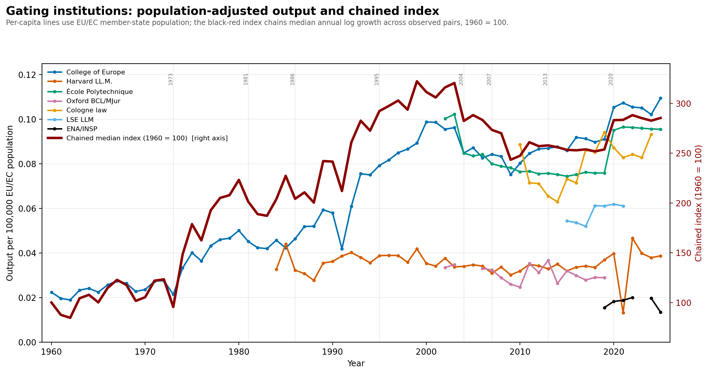
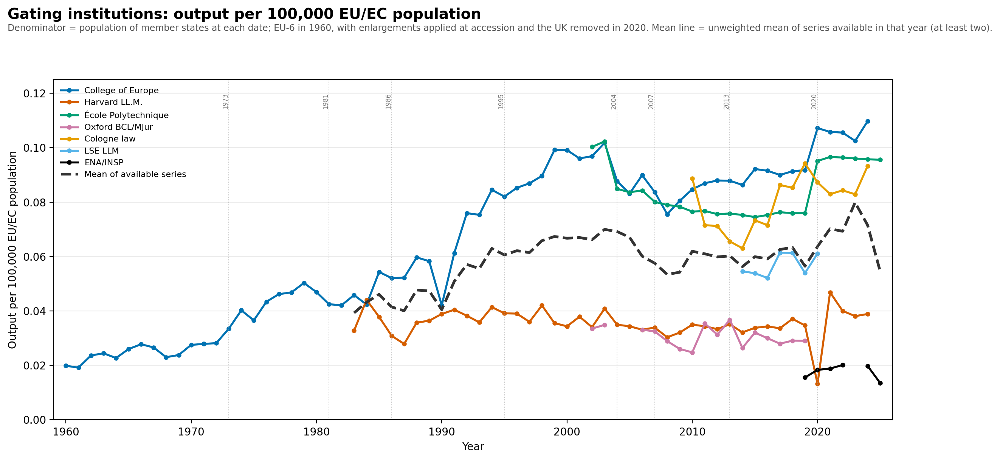
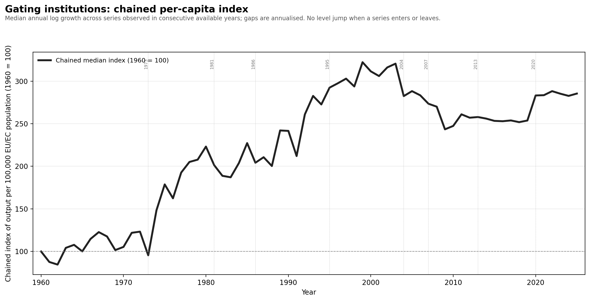
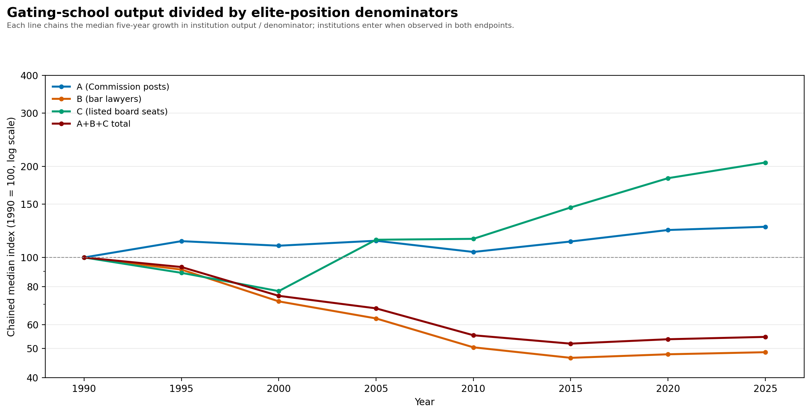
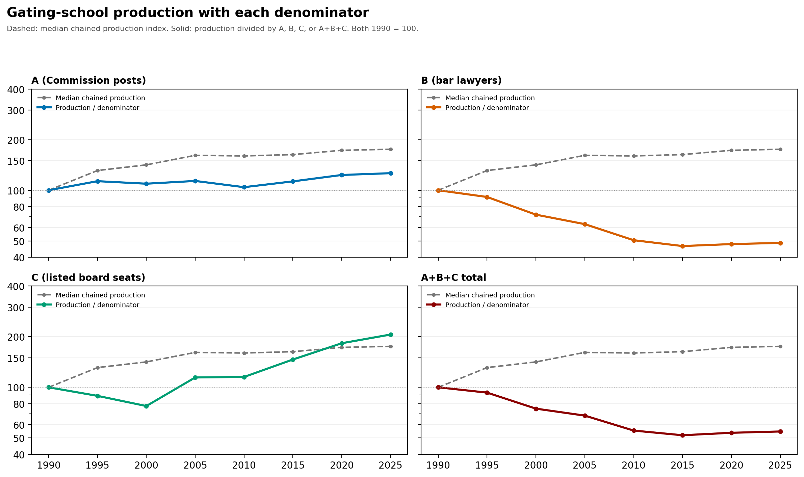
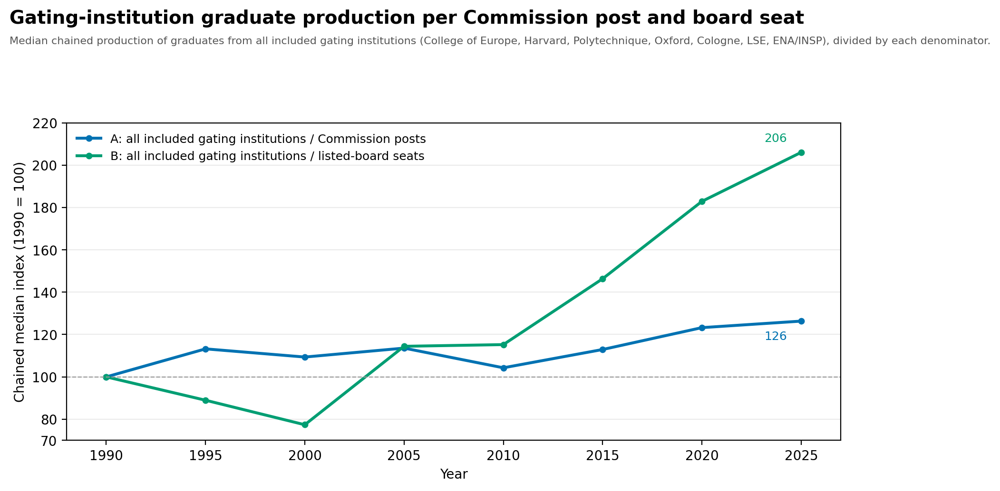
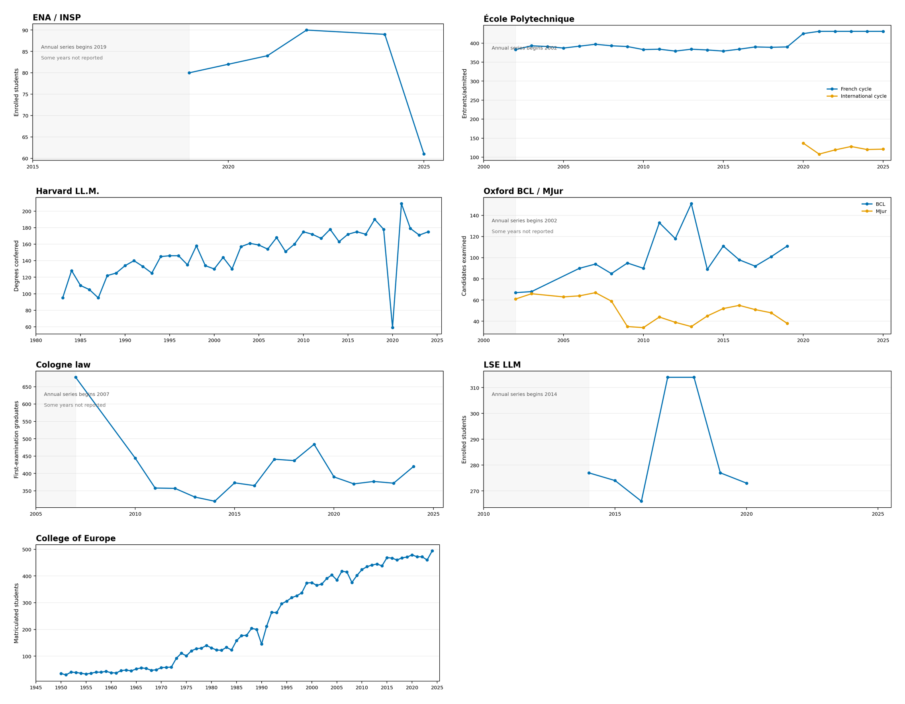

Candidate measures of elite overproduction
1. Population-adjusted output and chained index

2. Individual population-adjusted series

3. Chained per-capita index

4. A/B/C/total denominator indices

5. Four denominator panels

6. Paper A/B figure

7. Individual institution trajectories
